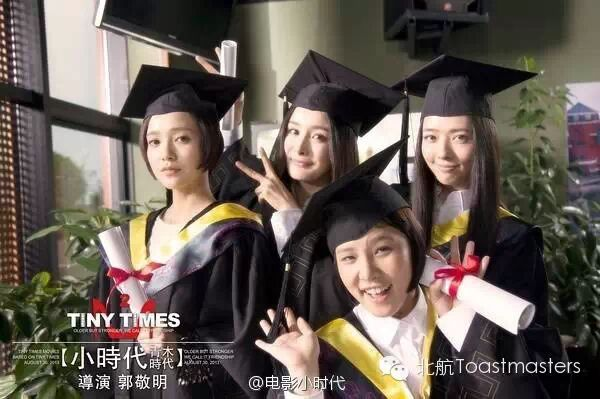
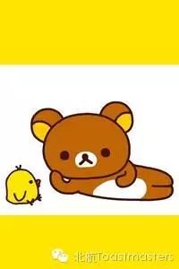
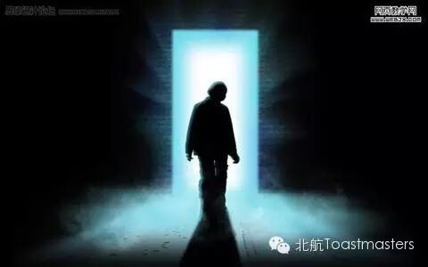

Graduation
Time: 19:30-21:30, Friday, April. 3
Venue: Room B208, New Main Building, Beihang University

Toastmaster: Jack
Table Topic Master: Jill
Some of us are still in college, when others have already graduated. But we all have fantastic memories in college. However, every grand feast has a ending. Our beautiful school life will one day come to an end, we will graduate.
Once, I found a question on the website: when do you feel most lonely?
And a man answered, it was his graduation. The last day in college, he was playing computer games. After killing the boss, he got a legend weapon. He turned around to show off, only to find his roommates have already left the school. At that moment, he felt great sorrow and it was just like a great bunch on his heart. If you ever played games with your roommates, you must know this feeling.
Though it is hard, but all of us will finally graduate. Today, let's talk about graduation.
Prepared Speech
Think It Simple
cc4 Monk

Life is complicated. There are too many questions to think about and too many things to do in the complicated way. Can we live a simple life and be relaxed? Today let's welcome monk to talk about how to think it simple.
Prepared Speech
To be Decided
cc2 Vicky

A secret makes a woman woman. Gentleman likes woman with a secret. Woman with secret is just as mysterious as a fairy. However, today, I'm going to introduce you a girl full of secrets. Every the title of her speech is a secret! Now let's welcome our mysterious fairy, Vicky.
Map
Our meeting venue changed to RoomB208, New Main Building, Beihang University (北航新主楼B208房间). And you can phone to Keven for help.
TEL: 15810539853
See you in the meeting!

https://mp.weixin.qq.com/s/Nr3iIXD-ogkrib8eEI5_pg
本页为抢救式本地归档，图文已永久保存。